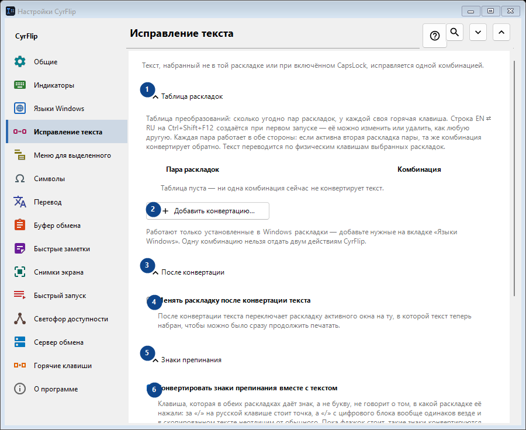
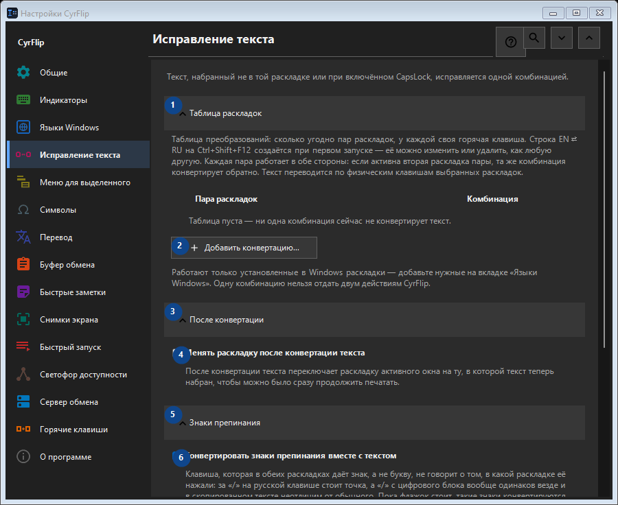

Исправление текста
Для чего это окно
Текст, набранный не в той раскладке или при включённом CapsLock, исправляется одной комбинацией.


Порядок действий
Настройки применяются сразу. Обязательного порядка нет; используйте группы ниже.
Элементы
1. Таблица раскладок
Используйте команду, когда нужно указанное действие. Прочитайте запрос подтверждения перед согласием.
Ваши сочетания клавиш2. Добавить конвертацию...
Используйте команду, когда нужно указанное действие. Прочитайте запрос подтверждения перед согласием.
Ваши сочетания клавиш3. После конвертации
Используйте команду, когда нужно указанное действие. Прочитайте запрос подтверждения перед согласием.
Ваши сочетания клавиш4. Менять раскладку после конвертации текста
После конвертации текста переключает раскладку активного окна на ту, в которой текст теперь набран, чтобы можно было сразу продолжить печатать.
Ваши сочетания клавиш5. Знаки препинания
Используйте команду, когда нужно указанное действие. Прочитайте запрос подтверждения перед согласием.
Ваши сочетания клавиш6. Конвертировать знаки препинания вместе с текстом
Клавиша, которая в обеих раскладках даёт знак, а не букву, не говорит о том, в какой раскладке её нажали: за «/» на русской клавише стоит точка, а «/» с цифрового блока вообще одинаков везде и в скопированном тексте неотличим от обычного. Пока флажок стоит, такие знаки конвертируются вместе с текстом - так CyrFlip вёл себя всегда. Снимите его, если чаще набираете их намеренно: тогда «/ghbdtn» сохранит свой слеш вместо того, чтобы начаться с точки. Знаки, на клавише которых в другой раскладке стоит буква (запятая, скобки), конвертируются в любом случае.
Ваши сочетания клавиш7. Регистр
Используйте команду, когда нужно указанное действие. Прочитайте запрос подтверждения перед согласием.
Ваши сочетания клавиш8. Исправить CapsLock
Меняет верхний и нижний регистр у выделенного текста. Удобно для случайно включённого CapsLock.
Ваши сочетания клавиш9. Изменить - Исправить CapsLock
Используйте команду, когда нужно указанное действие. Прочитайте запрос подтверждения перед согласием.
Ваши сочетания клавиш10. Синхронизировать CapsLock после исправления регистра
После исправления регистра меняет физическое состояние CapsLock, чтобы следующие нажатия соответствовали исправленному тексту.
Ваши сочетания клавиш